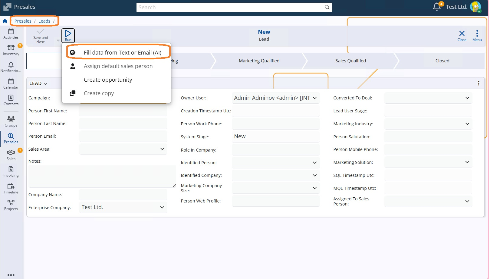
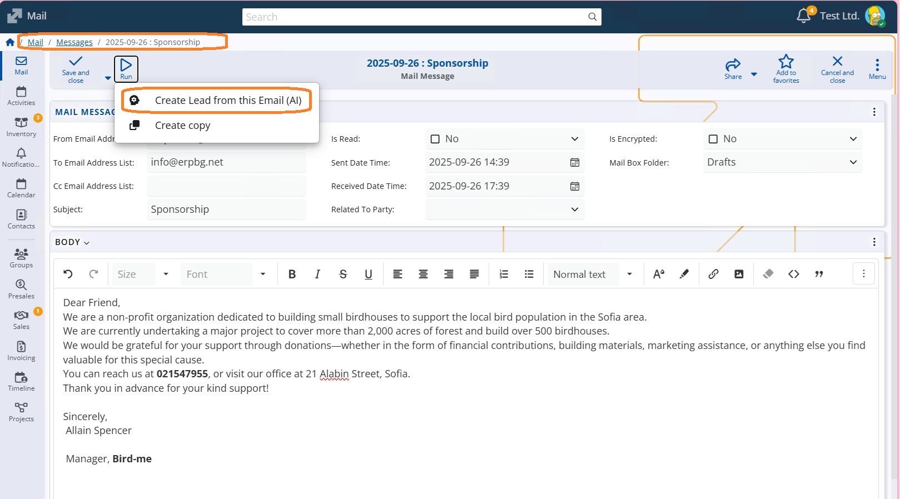

Create Leads from Text or Email (AI)
ERP.net uses AI to extract lead information from unstructured text or emails and automatically populate Lead fields. Instead of manual data entry, the system analyzes the content, identifies relevant business data, and prepares a Lead for review.
This functionality speeds up lead creation, reduces manual effort, and helps ensure that important opportunities are captured from incoming communications.
It is available through two AI features:
- Fill data from text or Email (AI) in the Lead definition
- Create Lead from this Email (AI) in the Mail business app
Fill Data from Text or Email (AI)
This option is available when creating or editing a Lead.
Where to Find It
- Open the Leads definition.
- Create a new Lead or open an existing one.
- In the Lead form, choose Fill data from text or Email (AI).

How It Works
When you select this option, you can provide:
- Free-form text (for example, copied from an email, website, or message), or
- The content of an email

The AI analyzes the provided content and automatically recognizes and fills in relevant Lead attributes, such as:
- Lead name
- E-mail address
- Company
- Telephone
- Title and position
- Any other information relevant to the available form fields
In addition, the AI generates a concise summary of the original text or email and places it in the Notes field of the Lead. This allows you to keep the full context without manually reviewing the entire message again.
Create Lead from This Email (AI)
This option is available directly from the Mail business app.
Where to Find It
- Open the Mail business app.
- Open an incoming email.
- Select Create Lead from this Email (AI).

How It Works
When triggered, the system uses the content of the selected email as input for the AI. The AI:
- Scans the email body and sender information
- Extracts lead-related data and proposes a new Lead
- Automatically fills in recognized fields in the Lead form
- Generates a summary of the email and stores it in the Notes section
You can then review the generated Lead, make adjustments if needed, and save it.
Result
Both options aim to speed up lead creation and reduce manual data entry while preserving the original context of the communication. The generated Lead should always be reviewed before saving to ensure accuracy.